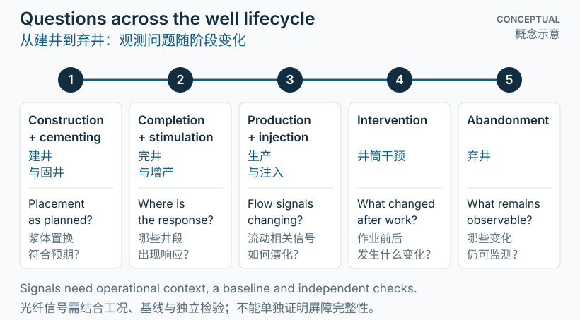

先理解：一口井的任务会变化
一口井首先是一条需要被设计、建造并管理的地下通道。勘探评价和场址、井身设计之后，钻井形成井眼，套管和水泥等构成井筒结构；完井使其能够承担预定的生产或注入任务。运行后，井可能经历监测、维护、修井或暂停，最终进入永久封井与地表恢复阶段。[1][2][3][4]
这是理解作业逻辑的框架，不是全球统一的程序。有些井没有商业产量，会在进入生产前封井；有些井用于注入。地质、井型、经济条件和所在地区的要求都会影响路径。
对监测而言，核心问题也随阶段变化：施工时关注材料去了哪里；生产时关注流体从哪里进入或离开；关闭时则需要符合要求的长期隔离与验证。
A well is a subsurface pathway that must be designed, constructed, and managed. After appraisal and site/well design, drilling creates the hole; casing and cement contribute to its structure. Completion prepares it for the intended production or injection service. Operation can include monitoring, maintenance, intervention, and suspension, followed eventually by permanent plugging and surface restoration.[1][2][3][4]
This is a framework for understanding operations, not a globally uniform procedure. A noncommercial well may be abandoned before production, while another is designed for injection. Geology, well type, economics, and jurisdiction shape the route.
The monitoring question changes with the stage: where did material go during construction, where do fluids enter or leave during operation, and what evidence supports the required long-term isolation at closure?

深入：阶段与重要分支
钻井与固井是分段推进的
钻井并不意味着先一次性钻完全井，再统一下套管和固井。随着井段推进，需要按井身设计进行套管作业，相关循环可重复发生。钻井阶段还伴随地层评价和风险管理。把套管、水泥、井眼与生产油管区分开，是理解后续温度和应变路径的基础。[2]
完井与增产不是同义词
完井使井具备预定服务功能，包括建立所需的流动通道和井下设备配置。水力压裂是一种可选的增产改造方式，不是所有井都必须经历的阶段。修井则可能在后续运行中恢复或改变井的功能；其频率和内容取决于具体需要。[3]
运行、干预与暂时停井
生产井或注入井在运行中需要根据流动和井筒状态进行监测与管理。维护或修井后可重新运行，因此生命周期存在回路。暂时关井或暂停使用也不等于永久封井；两者对应的目标和后续责任不同。[1][3]
永久封井与地表恢复
永久关闭需要按适用要求实施封堵并验证隔离，地表设施处置和土地恢复属于相关但不同的工作。关闭后是否仍有监测、记录或其他责任，取决于当地制度和具体项目。不能把“停止生产”当作关闭工作的全部完成。[1][4]
Drilling and cementing progress in sections
Wells are not necessarily drilled to final depth before all casing and cementing occur. Casing operations recur as construction progresses according to the well design. Formation evaluation and risk management accompany drilling. Distinguishing the hole, casing, cement, and production tubing is essential for understanding later thermal and strain pathways.[2]
Completion is not synonymous with stimulation
Completion prepares the well for its intended service through the necessary flow connections and downhole equipment. Hydraulic fracturing is an optional stimulation method, not a compulsory stage for every well. A later workover may restore or change well function; its timing and scope depend on the actual need.[3]
Operation, intervention, and temporary suspension
Producing and injecting wells are monitored and managed in relation to flow and well condition. Maintenance or workovers can return a well to service, creating loops in its history. Temporary shut-in or suspension is distinct from permanent abandonment; their purposes and continuing responsibilities differ.[1][3]
Permanent plugging and surface restoration
Permanent closure involves plugging and verification under applicable requirements. Removing surface facilities and restoring land are related but distinct activities. Continuing monitoring, records, or other post-closure responsibilities depend on the jurisdiction and project. “Production stopped” is not evidence that closure is complete.[1][4]
深入：把观测放回作业时间线
光纤可以连接多个阶段的问题，但各阶段仍需各自的物理解释。以下是观测与问题的示例，而不是必然可以独立完成的诊断：
- 建井：DTS 可跟踪热变化，辅助研究水泥浆放置和水化；解释需要泵注记录、温度基线和热传递背景。[5]
- 完井或增产：结合施工作业时间线，研究 DAS、DTS 或应变变化与流体、工具和地层响应的关系。信号出现并不自动证明裂缝几何。
- 生产或注入：温度与声学观测可提出流动位置或状态变化的假设，但流量解释需要模型、运行条件和适用的独立标定。
- 干预与关闭：保留前后基线有助于比较变化；光纤观测应与适用的水泥评价、压力测试及其他屏障验证共同考虑。[4][5]
把光纤距离转换为可靠的井深，并同步作业事件与观测时钟，通常比单看一幅彩色图更有意义。
Fiber measurements can connect questions across stages, but each needs its own physical interpretation. These examples are observation-to-question links, not promises of standalone diagnosis:
- Construction: DTS thermal histories can support investigation of cement placement and hydration when combined with pumping records, baselines, and heat-transfer context.[5]
- Completion or stimulation: align DAS, DTS, or strain changes with operational timing to investigate fluid, tool, and formation responses. Detecting a signal does not automatically establish fracture geometry.
- Production or injection: temperature and acoustic observations can suggest changes in flow location or condition. Quantitative flow interpretation needs models, operating conditions, and appropriate independent calibration.
- Intervention and closure: before/after baselines help compare changes. Fiber observations complement applicable cement evaluation, pressure testing, and other barrier verification.[4][5]
Registering fiber distance to reliable well depth and synchronizing operational and observation clocks can be more informative than inspecting a colored plot alone.
解释边界：监测不是完整性认证
光纤不能独自证明井的完整性。 传感响应、井筒屏障功能和监管合规是相关但不同的判断。未见温度或声学异常，不等于已验证水力密封。
这里引用的监管机构资料用于解释一般概念，不能替代具体井的法规、设计或作业程序。阶段划分、屏障要求和关闭后的义务应由当地适用要求和专业工程判断确定。[1][4]
Fiber alone cannot certify well integrity. Sensor response, barrier function, and regulatory compliance are related but separate judgments. No observed thermal or acoustic anomaly is not proof of a hydraulic seal.
The agency sources below explain general concepts; they are not a substitute for a particular well’s regulations, design, or procedures. Stage definitions, barrier requirements, and post-closure duties must follow applicable local requirements and qualified engineering judgment.[1][4]
参考资料
- Alberta Energy Regulator · Project life cycle监管机构教育资料：启动、建造、运行与关闭
- OSHA · Oil and gas well drilling: casing operations政府技术资料：钻井期间的套管作业
- US EPA · Well completions and workovers政府技术资料：完井与修井
- US EPA · Well plugging政府技术资料：封堵与验证的一般概念
- Hart et al. (2025) · A fiber optic approach for cement placement and hydration assessment of deep geothermal boreholes原始现场研究 · Scientific Reports；地热井案例，不代表所有油气井
学习资料 · 图示非实测数据 · 具体工程决策须结合适用要求和独立验证